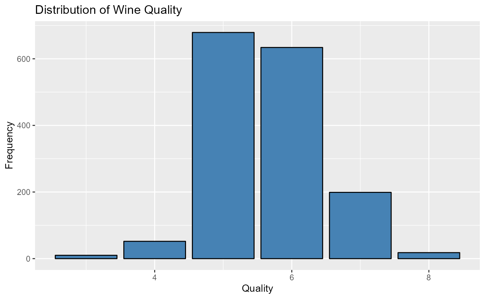

rwinepredict-vignette
rwinepredict-vignette.RmdThe rwinepredict package is designed to streamline the initial stages of wine quality analysis using linear modeling. By providing a suite of functions that assist with exploratory data analysis, rwinepredict ensures a thorough understanding of dataset characteristics and the relationships between variables, particularly when dealing with high correlation. The package’s utilities range from data cleaning to visualization, making it a valuable tool in the preparation phase of predictive modeling.
We introduce the core functions of rwinepredict:
- Data cleaning and preparation
- Binary classification of numerical variables
- Visualizations for exploratory analysis
This package was created for selecting factors that offer the best prediction for wine quality found in https://github.com/DSCI-310-2024/DSCI_310_Group_6_wine_quality_predictors
The rwinepredict package, designed for R version 4.3.2 and above, simplifies wine data analysis and visualization seamlessly. It relies on essential dependencies like tibble, ggplot2, and tidyverse to efficiently manage data frames, create powerful visualizations, and manipulate data effortlessly. The package’s standout feature is its ability to streamline workflows by eliminating intermediate steps, allowing users to generate graphs or clean data with just one function call. You can follow the tutorial below that walks you through the four key functions associated with this package.
Once you have installed the packages, load the library:
library(rwinepredict)1. clean_data()
Data cleaning and preprocessing is a critical first step in any data analysis workflow. The clean_wine_data() function simplifies this process specifically for wine datasets. This function not only removes NA values but also scales numeric columns and converts the target column into a factor, preparing the dataset for further analysis.
The function accepts two parameters:
- data: A dataframe containing the wine dataset to be cleaned.
- target_col: The name of the target column in the dataset that you want to convert to a factor
Below we will show an example of how to use the function through the ‘winequality-red.csv’ dataset that can be found here
dataset_url <- "https://raw.githubusercontent.com/kirenz/datasets/master/winequality-red.csv"
wine_data <- read.csv(dataset_url, header = TRUE, sep = ";")
target_column <- "quality"
cleaned_wine_data <- clean_wine_data(wine_data, target_col = target_column)
#>
#> Attaching package: 'dplyr'
#> The following objects are masked from 'package:stats':
#>
#> filter, lag
#> The following objects are masked from 'package:base':
#>
#> intersect, setdiff, setequal, union
head(cleaned_wine_data)
#> fixed.acidity volatile.acidity citric.acid residual.sugar chlorides
#> 1 -0.5306840 0.9623354 -1.396233 -0.45196146 -0.24418214
#> 2 -0.3011211 1.9664933 -1.396233 0.04399231 0.22236280
#> 3 -0.3011211 1.2970547 -1.190808 -0.16855931 0.09512327
#> 4 1.6501637 -1.3806995 1.479719 -0.45196146 -0.26538873
#> 5 -0.5306840 0.9623354 -1.396233 -0.45196146 -0.24418214
#> 6 -0.5306840 0.7391893 -1.396233 -0.52281200 -0.26538873
#> free.sulfur.dioxide total.sulfur.dioxide density pH sulphates
#> 1 -0.46412881 -0.3782779 0.55487204 1.2879580 -0.58022146
#> 2 0.88193533 0.6239011 0.02501193 -0.7188395 0.12719770
#> 3 -0.07953906 0.2291033 0.13098395 -0.3304271 -0.04965709
#> 4 0.11275582 0.4113176 0.66084406 -0.9777811 -0.46231827
#> 5 -0.46412881 -0.3782779 0.55487204 1.2879580 -0.58022146
#> 6 -0.27183393 -0.1960636 0.55487204 1.2879580 -0.58022146
#> alcohol quality target_column
#> 1 -0.9591303 -0.7884975 quality
#> 2 -0.5836274 -0.7884975 quality
#> 3 -0.5836274 -0.7884975 quality
#> 4 -0.5836274 0.4494591 quality
#> 5 -0.9591303 -0.7884975 quality
#> 6 -0.9591303 -0.7884975 quality2. distribution_bar()
Visualization is key to understanding the distribution of variables in your dataset. The distribution_bar() function creates a bar chart to display the frequency of each category within a variable.
Parameters: - data: Your dataset as a data frame or tibble. - x: The unquoted name of the column you want to plot on the x-axis.
Here’s how you can visualize the distribution of the ‘quality’ variable from the winequality dataset:
dist_plot <- distribution_bar(wine_data, x = "quality",
title = "Distribution of Wine Quality",
x_label = "Quality",
y_label = "Frequency")
print(dist_plot)
3. quality()
Transforming numerical data into categorical data can provide more intuitive insights during your analysis. The quality() function converts numerical scores in a column of your dataframe into categorical values, “bad” or “good”.
Parameters: - data: A dataframe containing a ‘quality’ column.
Here’s an example that demonstrates how to apply this transformation:
transformed_data <- quality(wine_data)
head(transformed_data)
#> fixed.acidity volatile.acidity citric.acid residual.sugar chlorides
#> 1 7.4 0.70 0.00 1.9 0.076
#> 2 7.8 0.88 0.00 2.6 0.098
#> 3 7.8 0.76 0.04 2.3 0.092
#> 4 11.2 0.28 0.56 1.9 0.075
#> 5 7.4 0.70 0.00 1.9 0.076
#> 6 7.4 0.66 0.00 1.8 0.075
#> free.sulfur.dioxide total.sulfur.dioxide density pH sulphates alcohol
#> 1 11 34 0.9978 3.51 0.56 9.4
#> 2 25 67 0.9968 3.20 0.68 9.8
#> 3 15 54 0.9970 3.26 0.65 9.8
#> 4 17 60 0.9980 3.16 0.58 9.8
#> 5 11 34 0.9978 3.51 0.56 9.4
#> 6 13 40 0.9978 3.51 0.56 9.4
#> quality
#> 1 bad
#> 2 bad
#> 3 bad
#> 4 good
#> 5 bad
#> 6 bad4. scatter_plot()
Understanding the relationship between two variables is essential in many analyses. The scatter_plot() function generates a scatter plot for this purpose, providing a visual means to detect patterns, trends, or outliers between two quantitative variables.
Parameters: data: A data frame containing your dataset. x_var: The column name for the x-axis variable. y_var: The column name for the y-axis variable. x_label: Label for the x-axis. y_label: Label for the y-axis.
Find an example below to explore the relationship between ‘alcohol’ content and ‘quality’:
scatter <- scatter_plot(wine_data, x_var = "alcohol", y_var = "quality",
title = "Alcohol Content vs. Wine Quality",
x_label = "Alcohol (%)",
y_label = "Quality")
scatter